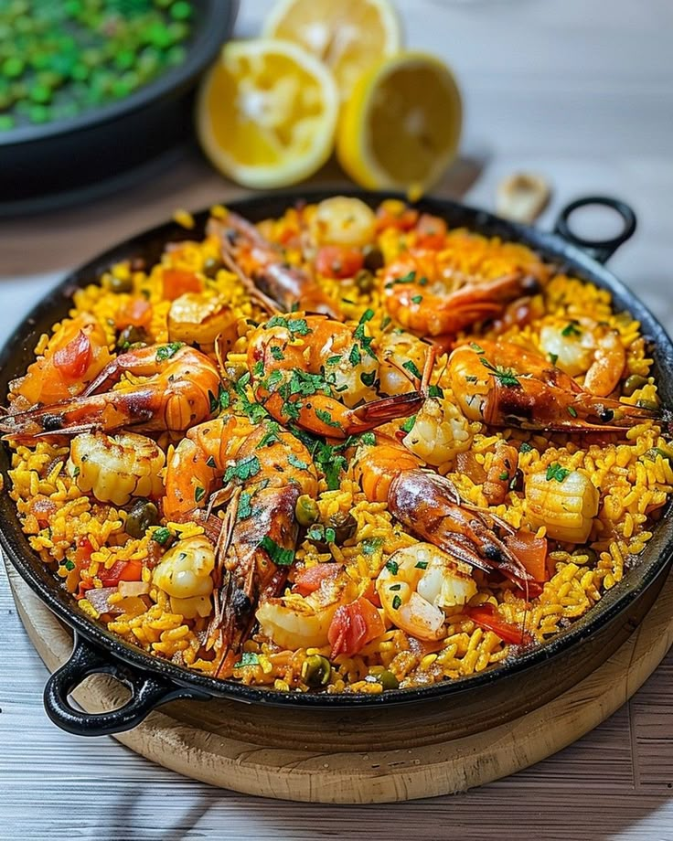
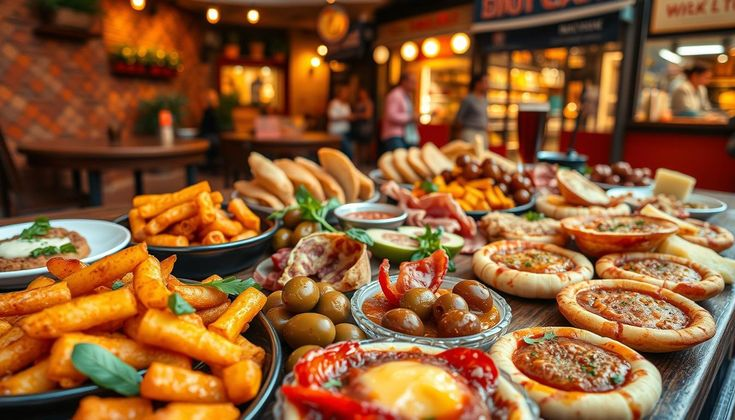

İspanya Yemek

Paella ve deniz ürünleri restoranları.Sahil şehirlerinde taze deniz ürünleri ve paella deneyimi unutulmazdır. Restoranlar kalamar, karides, midye ve balık çeşitleriyle öne çıkarken, bazı mekanlar tapas kültürünü deniz ürünlü paellayla birleştirerek hem lezzet hem de ambiyans açısından zengin bir deneyim sunar. Bu sayede yemek, sadece damak tadınızı değil, keyifli bir ortamda yapılan deneyimi de kapsar.

Tapas kültürü ve sokak lezzetleri.Tapas kültürü ve sokak lezzetleri, yemek deneyimini hem sosyal hem de eğlenceli hâle getirir. Küçük porsiyonlar hâlinde sunulan tapaslar, farklı tatları denemek ve paylaşmak için idealdir. Sokak tezgahlarında ise taze kızarmış atıştırmalıklar, churros ve yerel tatlılar gibi lezzetler, hızlı ve keyifli bir deneyim sunar. Bu sayede yemek sadece bir ihtiyaç değil, aynı zamanda keşif ve keyif dolu bir etkinlik olur.

İspanyol tatlıları ve geleneksel tarifler.İspanyol tatlıları, zengin malzemeleri ve özgün tarifleriyle öne çıkar. Churros, taze ve sıcak olarak çikolatayla servis edilirken, tarta de Santiago bademli yapısıyla dikkat çeker. Flan, natürel kıvamı ve karamelli aromasıyla klasik bir tercih olurken, diğer geleneksel tarifler de bölgesel farklılıklarla tat deneyimini çeşitlendirir. Bu tatlılar, hem lezzet hem de kültürel bir keşif sunarak yemek deneyimini tamamlar.